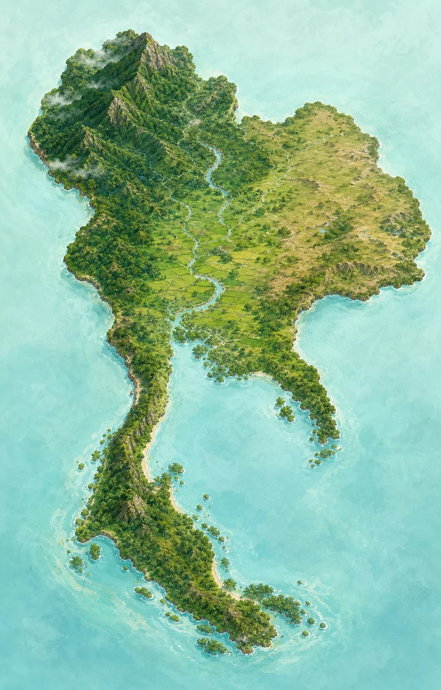

ของพื้นที่ตัวอย่าง
NATURE INTELLIGENCE · THAILAND
มองธรรมชาติให้ชัด ก่อนลงมือเปลี่ยนแปลง
NatureLens AI เปลี่ยนข้อมูลสิ่งแวดล้อมที่ซับซ้อน ให้เป็นเรื่องราวและแนวทางฟื้นฟูที่ทุกคนเข้าใจได้
AIเลือกพื้นที่บนแผนที่

Nature opportunity Human pressure
ภาพประกอบและค่าทั้งหมดเป็นข้อมูลจำลอง ไม่ใช่ขอบเขตหรือผลวิเคราะห์ทางราชการ
ระบบนิเวศ
ดัชนีชนิดพันธุ์
แรงกดดันมนุษย์
ข้อมูลย้อนหลัง
AREA COMPARISON
เปรียบเทียบพื้นที่
ดูตัวชี้วัดสำคัญแบบเคียงข้างกัน
VS
CHANGE DETECTION
การเปลี่ยนแปลงธรรมชาติ
ภาพสาธิตเปรียบเทียบข้อมูลอดีตและปัจจุบัน
อดีต
ปัจจุบัน
เลือกพื้นที่จากหน้าแผนที่
ระบบจะแสดงค่าการเปลี่ยนแปลงจำลองของพื้นที่ล่าสุดที่เลือก